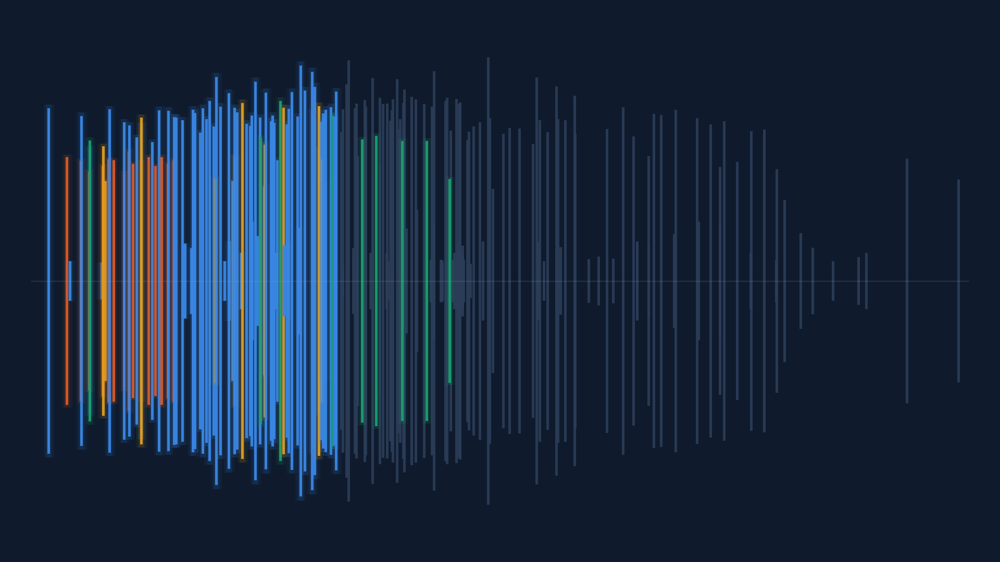
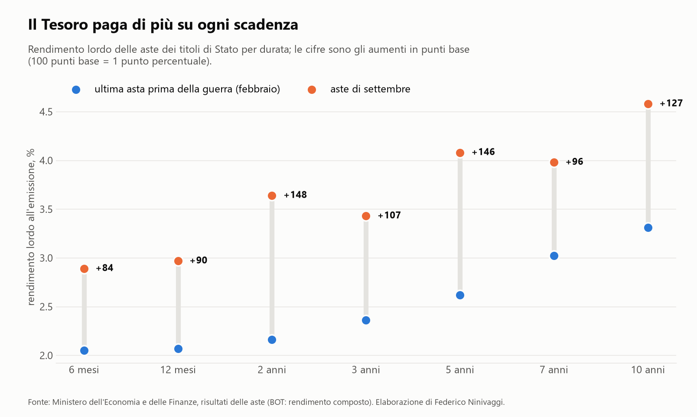
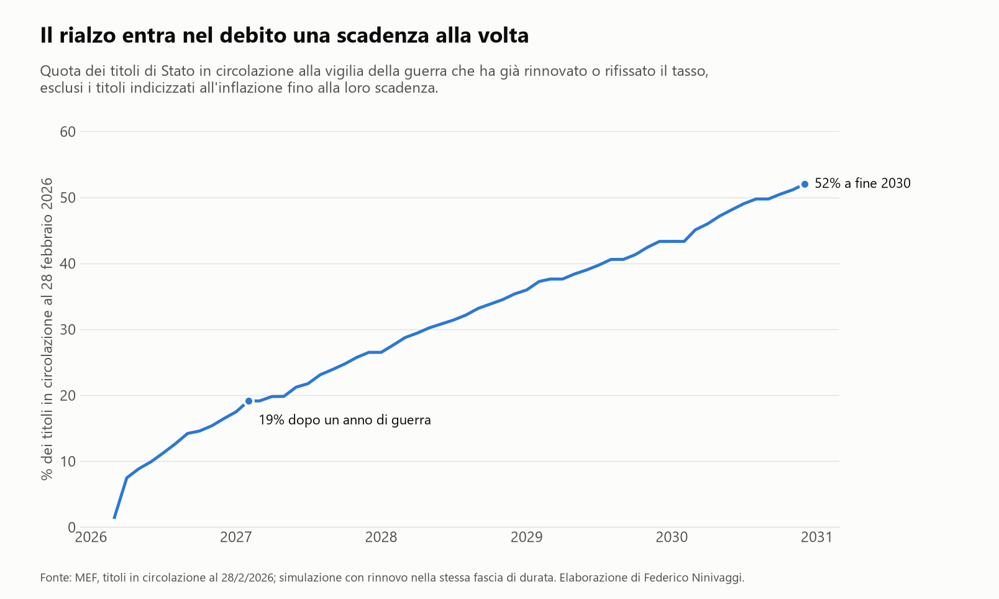
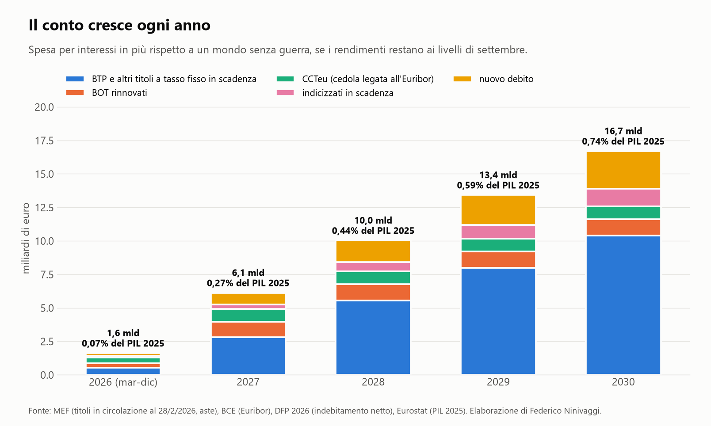
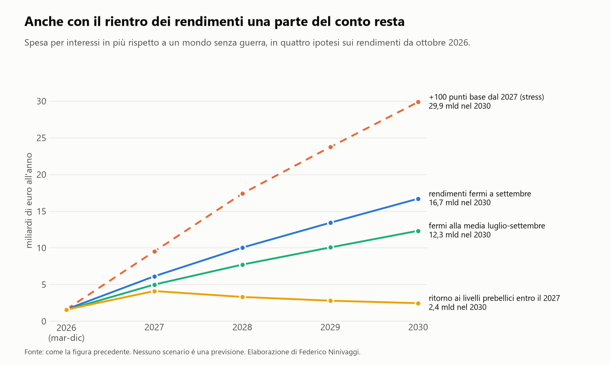

L’impatto del rialzo dei rendimenti dei titoli di Stato sul bilancio italiano
Nº 05 · long read · 9 ott 2026
L’impatto del rialzo dei rendimenti dei titoli di Stato sul bilancio italiano
Dalla vigilia del conflitto con l’Iran i rendimenti dei titoli di Stato sono saliti in Italia come in Germania: sul mercato secondario circa tre quarti del rialzo italiano si ritrovano nel Bund, il riferimento dell’area dell’euro. Il Tesoro paga fino a un punto e mezzo percentuale in più sui nuovi titoli, e il rialzo entra nel debito una scadenza alla volta. Con i rendimenti fermi ai livelli dell’estate o delle aste di settembre, la spesa per interessi del 2030 crescerebbe tra 12,3 e 16,7 miliardi di euro.
Finanza pubblicaMercati e credito
↩ torna a Long read
Dalla vigilia del conflitto con l’Iran i rendimenti dei titoli di Stato sono saliti in Italia come in Germania: sul mercato secondario circa tre quarti del rialzo italiano si ritrovano nel Bund, il riferimento dell’area dell’euro. Il Tesoro paga fino a un punto e mezzo percentuale in più sui nuovi titoli, e il rialzo entra nel debito una scadenza alla volta. Con i rendimenti fermi ai livelli dell’estate o delle aste di settembre, la spesa per interessi del 2030 crescerebbe tra 12,3 e 16,7 miliardi di euro.
Il 29 settembre 2026 il Tesoro ha collocato BTP a dieci anni a un rendimento lordo del 4,58%. Il 26 febbraio, due giorni prima dei primi attacchi all’Iran, un decennale di scadenza vicina era stato collocato al 3,31%. Una differenza di 127 punti base. Un punto base è un centesimo di punto percentuale. Per ogni miliardo di euro collocato oggi lo Stato pagherà 12,7 milioni di euro di interessi in più all’anno, per dieci anni. (1)
Analisi precedenti hanno indagato già il fenomeno del rialzo dei rendimenti e la trasmissione dai mercati mondiali ai titoli italiani. Il passo proposto è l’analisi dell’impatto di tale rialzo sul bilancio dello Stato, dove diventa spesa per interessi con una velocità che dipende dalla struttura del debito. Il Ministero dell’Economia e delle Finanze pubblica i due elementi necessari al calcolo: l’elenco del debito titolo per titolo e i rendimenti a cui il Tesoro si finanzia.
Il rialzo per ogni scadenza
Le aste del Tesoro misurano il prezzo del finanziamento pubblico. Tra l’ultima asta prima della guerra e le aste di settembre il rendimento è aumentato per ogni scadenza: di 84 punti base sui BOT a sei mesi, di 90 sui BOT a un anno, di 148 sui BTP a due anni, di 146 sui BTP a cinque anni e di 127 sul decennale. L’Euribor a sei mesi, il tasso interbancario a cui sono legate le cedole dei CCTeu, è passato da una media del 2,14% in febbraio a una media del 2,92% in settembre. (2)

Sul mercato secondario il rialzo appare più contenuto, e in gran parte comune all’area euro. Nelle medie mensili della Banca centrale europea il rendimento del decennale italiano è aumentato di 60 punti base tra febbraio e agosto, l’ultimo mese pubblicato, mentre nelle aste dello stesso periodo l’aumento è stato di 79 punti base. Il decennale tedesco è salito di 44 punti base, il 74% del rialzo italiano, e lo spread con la Germania è passato da 64 a 80 punti base. (3)
Alla fine dell’estate il rialzo ha superato le ipotesi del governo. Il Documento di finanza pubblica dell’aprile 2026, scritto a guerra in Medio Oriente già iniziata, assumeva per i tassi a lungo termine una media del 3,8% nel 2026 e del 4,0% nel 2027. La media delle 8 aste del decennale da gennaio a settembre è del 3,86%, vicina all’ipotesi per il 2026. L’asta di fine settembre si colloca invece 58 punti base sopra l’ipotesi per il 2027, vicino ai 60 punti base di rialzo che lo stesso documento adottava come scenario di rischio. (4)
I tempi del passaggio nel debito
Alla vigilia della guerra in Iran, lo Stato aveva in circolazione 221 titoli per 2.649,9 miliardi di euro, con una vita media di quasi sette anni. La gran parte dei titoli paga una cedola fissa. Il rialzo si trasmette nella spesa per interessi attraverso quattro canali: i titoli che scadono e dovranno essere rinnovati, i BOT con rinnovo continuo, i CCTeu che ogni sei mesi aggiornano la cedola all’Euribor e il nuovo debito che finanzia il disavanzo.
Seguendo uno ad uno i titoli di febbraio, un anno dopo l’inizio della guerra avrà cambiato tasso il 19% dello stock di febbraio, e alla fine del 2030 il 52%. I titoli indicizzati entrano nel conteggio solamente alla scadenza. La lentezza nell’adattamento è la protezione che una vita media lunga offre al bilancio, e spiega perché il rialzo del 2026 pesa ancora poco. (5)

La misura del costo
Per misurare il costo della guerra attraverso i rendimenti dei titoli di Stato, la spesa per interessi effettiva va confrontata con quella di un mondo, ipotetico, in cui i rendimenti fossero rimasti ai livelli della vigilia del conflitto. La differenza si sviluppa solamente dai titoli rinnovati, dalle cedole rifissate e dal nuovo debito, e si somma mese per mese. Fino a settembre il percorso è quello delle aste. Per gli anni successivi occorrono ipotesi, e la prima è la più semplice: i rendimenti restano ai livelli delle aste di settembre. (6)
In questa ipotesi il conto sarebbe di 1,6 miliardi di euro tra marzo e dicembre del 2026 e di 6,1 miliardi di euro nel 2027, pari allo 0,27% del prodotto interno lordo del 2025. Crescerebbe poi ogni anno fino a 16,7 miliardi di euro nel 2030, lo 0,74% del PIL del 2025. Nel 2027 la voce più grande sarebbero i BTP e gli altri titoli a tasso fisso in scadenza, con 2,8 miliardi di euro. Seguirebbero i BOT con 1,1 miliardi di euro, i CCTeu con 1,0 miliardo, il nuovo debito con 0,9 miliardi e i titoli indicizzati giunti a scadenza e rinnovati a tasso fisso con 0,3 miliardi. Con il passare degli anni crescerebbe soprattutto il peso dei BTP rinnovati, fino a 10,4 miliardi di euro nel 2030, mentre gli indicizzati rinnovati salirebbero a 1,3 miliardi di euro. (7)

Nel 2025 la spesa per interessi delle amministrazioni pubbliche è stata di 87,1 miliardi di euro, il 3,9% del PIL. Nel 2030 il conto della guerra, con i rendimenti fermi ai livelli di settembre, sarebbe pari a circa il 19% di quella spesa e al 15% della spesa che il governo prevede per il 2029. (8)
Le altre ipotesi sui rendimenti
L’ipotesi dei rendimenti fermi è una tra molte, e le altre cambiano il risultato in modo rilevante. Se da ottobre 2026 i rendimenti restassero alla media dei mesi da luglio a settembre, meno esposta alle aste dei giorni di maggiore tensione, il conto del 2030 calerebbe a 12,3 miliardi di euro. Se i rendimenti aumentassero di un altro punto percentuale dal gennaio 2027, come in una prova di stress, il conto del 2030 salirebbe a 29,9 miliardi di euro, l’1,32% del PIL del 2025.
Il caso più istruttivo è il ritorno dei rendimenti ai livelli prebellici entro la fine del 2027. Anche così il conto non si azzererebbe: sarebbe di 4,1 miliardi di euro nel 2027 e ancora di 2,4 miliardi di euro nel 2030. I titoli a medio e lungo termine emessi nei mesi della guerra conservano la cedola più alta fino alla scadenza, in alcuni casi per oltre quarant’anni, e una parte del costo resta nel bilancio a lungo dopo il rientro dei rendimenti. (9)

Una parte del conto dipende dall’Italia, il resto dall’area dell’euro. Se dal febbraio 2026 fosse cambiato solo lo spread con la Germania, applicato ai BTP con BOT ed Euribor fermi, il conto sarebbe di 0,6 miliardi di euro nel 2027 e di 1,9 miliardi di euro nel 2030, il 12% del conto con i rendimenti fermi a settembre. La stima è probabilmente un limite inferiore della parte italiana, perché lo spread ufficiale si ferma ad agosto mentre il conto principale arriva alle aste di fine settembre. (10)
I limiti del calcolo
Il calcolo considera i soli titoli di Stato e i soli rendimenti nominali. La guerra agisce però anche attraverso l’inflazione. I titoli indicizzati ai prezzi, i BTP€i e i BTP Italia, ammontavano a 277,7 miliardi di euro al 28 febbraio 2026, e ogni punto percentuale di inflazione in più accresce il loro costo di circa 2,8 miliardi di euro l’anno. Il governo ha portato la previsione d’inflazione del 2026 dall’1,7% dell’ottobre 2025 al 2,9% dell’aprile 2026, e sugli indicizzati la differenza di 1,2 punti costerebbe circa 3,3 miliardi di euro in un anno, più del conto nominale del 2026. Restano fuori anche i prestiti europei e l’effetto della guerra sulla crescita, che conta per il rapporto tra debito e prodotto. (11)
Il confronto con un mondo senza guerra tiene i rendimenti ai livelli della vigilia e attribuisce alla guerra ogni variazione successiva. Vi rientrano le decisioni delle banche centrali, che hanno alzato l’Euribor, e la parte del rialzo che riflette attese di crescita o premi per il rischio. BOT e CCTeu, che seguono la politica monetaria, rappresentano 2,1 dei 6,1 miliardi di euro del 2027. Il punto di partenza è basso, perché a fine febbraio lo spread era vicino ai minimi storici, e il congelamento dei livelli ignora che la curva prebellica, inclinata verso l’alto, implicava già rendimenti in salita, come nelle previsioni del Tesoro che li ricavano dalle curve a termine. Nei mesi prima del conflitto i rendimenti all’asta non salivano: il decennale era collocato al 3,44% in gennaio e al 3,31% in febbraio. (12)
Le previsioni del governo sono salite meno. Tra il Documento programmatico di bilancio dell’ottobre 2025 e il Documento di finanza pubblica dell’aprile 2026, scritto a guerra iniziata, la previsione della spesa per interessi del 2028 è passata dal 4,3 al 4,4% del PIL, un decimo di prodotto, circa 2,4 miliardi di euro. Con i rendimenti fermi ai livelli di marzo, quando il governo ha fissato le sue ipotesi, il calcolo di questo articolo dà per il 2028 5,4 miliardi di euro, più del doppio. Lo scarto ammette più spiegazioni. Due percentuali arrotondate al decimo possono distare fino a quasi due decimi, cioè fino a 4,9 miliardi di euro. La previsione del governo somma inoltre ai rendimenti la crescita e l’inflazione riviste, e ricava i rendimenti futuri dalle curve a termine invece che dalle aste. (13)
Per il bilancio conta da dove viene il rialzo. La parte che riflette un’inflazione più alta porterebbe con sé un gettito nominale più alto, e lo stesso Documento prevede per le entrate una sostanziale tenuta. La parte che riflette lo spread italiano arriverebbe invece al bilancio senza contropartita. La prossima legge di bilancio si misurerà con un conto che, per il solo 2027, va da 4,1 miliardi di euro, se i rendimenti tornassero ai livelli della vigilia entro la fine del 2027, a 9,5 miliardi di euro, se salissero di un altro punto.
Note e fonti
Elaborazioni su dati pubblici del Ministero dell’Economia e delle Finanze, della BCE e di Eurostat. Codice, revisione critica e prove di robustezza dell’analisi sono disponibili su richiesta.
Ministero dell’Economia e delle Finanze, MEF, risultati delle aste, voce «Rendimento Lordo»: BTP 3,45% con scadenza 1° febbraio 2036, asta del 26 febbraio 2026; BTP 4% con scadenza 1° ottobre 2036, asta del 29 settembre 2026. Le scadenze dei due titoli distano otto mesi. Un miliardo di euro per 127 punti base dà 12,7 milioni di euro l’anno.
MEF, risultati delle aste ordinarie fino a 10 anni: l’ultima asta con vita residua coerente con la scadenza prima del 27 febbraio e le aste di settembre 2026; per i BOT il rendimento composto. Se nello stesso giorno si collocano due titoli della stessa fascia, vale quello con la durata più vicina alla fascia. Le aste di settembre cadono in giorni diversi: BOT a un anno il 9 settembre, BTP a 3 e 7 anni il 10, BTP a 2 anni il 24, BOT a sei mesi il 25, BTP a 5 e 10 anni il 29. Le differenze tra scadenze vicine ne risentono. Euribor a sei mesi: BCE, media mensile.
BCE, rendimenti a lungo termine dei titoli di Stato per la convergenza, serie mensili IRS di Italia e Germania: il decennale italiano passa dal 3,39 per cento di febbraio al 3,99 per cento di agosto 2026. Aste del decennale: 3,31 per cento il 26 febbraio e 4,10 per cento il 28 agosto. Il dato di settembre non è ancora pubblicato.
MEF, Documento di finanza pubblica 2026, tavola I.3.2.1 «Ipotesi di base», p. 48: tasso di interesse a lungo termine, media annuale, 3,8 per cento nel 2026, 4,0 per cento nel 2027, 4,1 per cento nel 2028. Scenario di rischio, p. 55: «circa 30 punti base nel 2026, a circa 60 punti base nel 2027 e nel 2028». Media delle aste del BTP a 10 anni da gennaio a settembre 2026, nessuna in aprile. Il confronto tra le aste e una media annua è indicativo.
MEF, «Scadenze suddivise per anno», aggiornamento al 28 febbraio 2026: 221 titoli, 2.649,9 miliardi di euro, uguali alla composizione dei titoli in circolazione pubblicata alla stessa data. Dal file si tolgono la sezione dei titoli per il portafoglio REPO, che ripete tranche già elencate, e le rate dei prestiti NGEU. Gli indicizzati restano nello stock e contano come rifissati solo alla scadenza. Il Tesoro pubblica un indicatore analogo: al 31 marzo 2026 la quota del debito con scadenza o rifissazione entro un anno era del 25,8 per cento, entro cinque anni del 57,5 per cento. Sui titoli di febbraio la stessa misura è pari al 58,8 per cento a cinque anni, e a un anno va dal 19,1 al 28,3 per cento secondo come si contano gli indicizzati.
Simulazione mese per mese da marzo 2026 a dicembre 2030. I titoli in scadenza si rinnovano nella stessa fascia di durata originaria, e il calcolo non considera un eventuale accorciamento delle emissioni. I CCTeu rifissano la cedola ogni sei mesi all’Euribor. Il controfattuale tiene i rendimenti all’ultima asta prima della guerra e l’Euribor alla media di febbraio. Oltre i dieci anni, dove le aste prebelliche non sono disponibili sul sito del MEF, si usa la variazione del decennale: 25 punti base in più o in meno cambiano il conto del 2030 tra 16,1 e 17,3 miliardi di euro. Interessi per competenza. Lo schema, titolo per titolo, è quello del modello dell’Ufficio parlamentare di bilancio, che però ricava i rendimenti futuri dalle curve a termine: C. Gabbriellini e C. Pollastri, «Il modello UPB di analisi e previsione della spesa per interessi», Nota di lavoro n. 3, ottobre 2017.
Nuovo debito pari all’indebitamento netto del Documento di finanza pubblica 2026: 2,9 per cento del PIL nel 2026, 2,8 nel 2027, 2,5 nel 2028, 2,1 nel 2029, tenuto al 2,1 nel 2030, emesso con la struttura per durata dello stock di febbraio. Il nuovo debito non comprende il conto stesso: finanziare i 31,2 miliardi di euro accumulati dal 2026 al 2029 al 4,1 per cento aggiungerebbe circa 1,3 miliardi di euro nel 2030. Quote sul PIL del 2025 di Eurostat, 2.265 miliardi di euro.
MEF, Documento di finanza pubblica 2026, sez. I, p. 61, tavola II.1.2.1A, p. 72, e tavola II.1.2.1B, p. 73. Il 3,9 per cento è calcolato sul PIL del Documento, non sul PIL Eurostat della nota 7. Il Documento prevede per il 2029 una spesa per interessi di 111,6 miliardi di euro, il 4,5 per cento del PIL; le due misure non si sommano, perché la previsione di aprile conteneva già una parte del rialzo. Sul PIL del 2029 previsto dal Documento il conto del 2030 sarebbe pari allo 0,67 per cento.
Scenario B: le variazioni rispetto ai livelli prebellici si riducono in linea retta da settembre 2026 fino ad annullarsi a dicembre 2027. Nello scenario dei rendimenti fermi, con uno spostamento parallelo pari a quello del decennale su tutte le scadenze, il conto del 2030 sarebbe di 18,4 miliardi di euro. Il BTP con scadenza 1° marzo 2072, riaperto il 10 settembre 2026, ha una vita residua di oltre 45 anni.
Scenario dello spread: alle fasce dei BTP da due anni in su si applica la variazione dello spread decennale tra Italia e Germania rispetto a febbraio, dalle serie mensili IRS della BCE, mentre BOT ed Euribor restano fermi; settembre, non ancora pubblicato, ripete agosto. La scomposizione tra tassi comuni e spread segue l’esercizio dell’Ufficio parlamentare di bilancio, «L’impatto della riduzione dello spread sulla spesa per interessi», Flash n. 3, 2019.
Indicizzati: BTP€i e BTP Italia, valore rivalutato al 28 febbraio 2026. L’ordine di grandezza assume che un punto di inflazione in più rivaluti il capitale di circa l’1 per cento in un anno. Inflazione IPCA prevista per il 2026: 1,7 per cento nel Documento programmatico di bilancio 2026, tabella III.1-3, p. 26, e 2,9 per cento nel Documento di finanza pubblica 2026, tavola I.3.2.2, p. 52. I BTP€i seguono l’inflazione dell’area dell’euro e i BTP Italia quella italiana, quindi il conto è un ordine di grandezza. Documento di finanza pubblica 2026, sez. I, p. 69: le tensioni sui prezzi dell’energia «hanno comportato una revisione al ribasso delle attese di crescita economica e al rialzo per quanto riguarda l’inflazione», e la spesa per interessi «risponde – per la componente dei titoli indicizzati – agli aumenti dell’inflazione, ma anche – e soprattutto – al recente spostamento verso l’alto della curva dei rendimenti sui titoli di Stato (da cui si estraggono le previsioni implicite dei futuri livelli di tali rendimenti)».
MEF, risultati delle aste del BTP a 10 anni del 29 gennaio e del 26 febbraio 2026. Documento di finanza pubblica 2026, premessa: a fine febbraio lo spread tra BTP e Bund «si attestava sui minimi storici intorno ai sessanta punti base»; p. 78: «l’inclinazione positiva della curva dei rendimenti comporta un’aspettativa implicita di costante aumento dei rendimenti lungo tutto l’arco previsivo». Il confronto con le decisioni delle banche centrali e con le attese di crescita è un limite del controfattuale, non una stima: il calcolo non separa le cause del rialzo.
Documento programmatico di bilancio 2026, ottobre 2025, p. 5: spesa per interessi «dal 3,9 per cento del PIL nel 2024 al 4,3 per cento nel 2028». Documento di finanza pubblica 2026, p. 73: 4,4 per cento nel 2028. Un decimo di PIL sul PIL nominale tendenziale del 2028 del Documento di finanza pubblica, 2.433 miliardi di euro, tavola II.1.2.1A, p. 72. Ufficio parlamentare di bilancio, comunicato sull’audizione del 28 aprile 2026, p. 1: le ipotesi del Documento «sono state formulate nella seconda metà di marzo». Scenario con le variazioni dei rendimenti congelate ai livelli di marzo 2026 da aprile in poi: 5,4 miliardi di euro nel 2028, lo 0,24 per cento del PIL del 2025. Documento di finanza pubblica 2026, p. 69, sulle entrate: «le entrate sono attese mostrare una sostanziale tenuta».
Uscito su LinkedIn il 9 ottobre 2026: l’articolo originale.
Federico Ninivaggi · 9 ottobre 2026